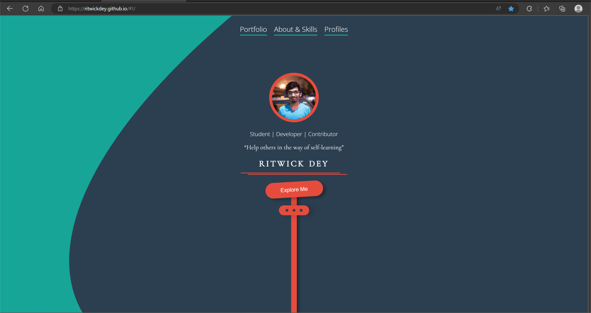

Research Project of Ritwick Dey's Portfolio

Link= Ritwick Dey'sgithub
Research Questions
1.What was the first thing you paid attention to when interacting with the experience?
The first thing I noticed is the jittery button of "Explore Me".
2.Spend two minutes with the experience and create a list of each of your discrete actions.
- Click "Explore Me" button
- Click "Portfolio" button
- Hovering on Ritwick Dey's avatar
- Click "Angular" "React.js" "Node.js" "ASRNET" button
- Click Official Tech Fest Website" project
- Click Live Url
- Click "NFS" button
3.What part of the experience did you spend the most time engaging with?
Click the category button to filter all the projects Ritwick Dey created.
4. What was the most common action in your two minute interaction with the experience?
Reading content and click buttons.
5.What is your impression of the intended primary goal of the interactive experience?
Reading content and click buttons.
6.What is your impression of how the interactive experience communicates its primary goal?
As a portfolio page,it provides a brief and clear overview of the creator. Audience is able to know about Ritwick Dey's skill and level of coding.
7.What is your impression of how the experience should be interacted with over time? (For how long and how many different times)
5 times per minute.
8.What is your impression of how the interactive experience communicates how it should be interacted with over time?